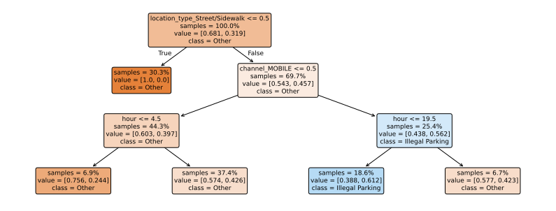

|--- study_hours <= 2.50
| |--- class: Fail
|--- study_hours > 2.50
| |--- class: Pass
Introduction to Data Science | Fall 2026
Mahiba Mansur
A decision tree is used to make predictions or classify information by breaking a problem down into a sequence of simple questions (Breiman et al. 1984; scikit-learn developers, n.d.-a).
Decision trees learn rules from labeled examples.
They make predictions by asking a sequence of questions.
Their paths are relatively easy to interpret.
Classification: predict a categorical outcome
Regression: predict a numeric outcome
The Gini impurity measures the mixture of classes in a node (Breiman et al. 1984):
\[ G = 1 - \sum_{k=1}^{K} p_k^2, \]
where \(G\) is the node’s impurity, \(K\) is the number of outcome classes, and \(p_k\) is the proportion of observations in class \(k\).
A binary split’s weighted impurity is
\[ G_{\mathrm{split}} = \frac{n_L}{n} G_L + \frac{n_R}{n} G_R, \]
where \(n_L\) and \(n_R\) are the numbers of observations in the left and right child nodes, \(n=n_L+n_R\) is the parent count, and \(G_L\) and \(G_R\) are the child-node impurities.
The impurity reduction is
\[ \Delta G = G_{\mathrm{parent}} - G_{\mathrm{split}}, \]
where \(G_{\mathrm{parent}}\) is the parent’s impurity and \(\Delta G\) is the decrease produced by the split.
At each node, the algorithm (scikit-learn developers, n.d.-a):
For scikit-learn’s binary trees, categorical predictors are first encoded as numerical indicators. The search is greedy: it does not optimize all future splits at once.
| Study hours | Practice quizzes | Result |
|---|---|---|
| 1 | 0 | Fail |
| 1 | 1 | Fail |
| 2 | 0 | Fail |
| 2 | 1 | Fail |
| 3 | 0 | Pass |
| 3 | 1 | Pass |
| 4 | 0 | Pass |
| 4 | 1 | Pass |
In this dataset, study hours perfectly separate the two classes.
|--- study_hours <= 2.50
| |--- class: Fail
|--- study_hours > 2.50
| |--- class: Pass
Prediction: PassThe student studied four hours, which exceeds the learned threshold of 2.5 hours, so the model predicts a pass. This is a simulated example, not evidence that studying four hours guarantees passing.
Question: Can a small decision tree classify whether an NYPD-directed 311 request is an Illegal Parking request?
The request records come from NYC Open Data (NYC Open Data, n.d.). We use the shared course extract, with requests created from September 6, 2026, through September 13 at 07:59, in New York local time.
Predictors available when the request was created:
The complaint label and closure information are not used as predictors.
The archive is read directly from the published book repository; no local copy is required.
Dates are parsed explicitly. Missing creation times or complaint labels are excluded; missing categorical predictors receive a separate label.
Each row is one request. These counts describe this fixed extract rather than the full NYC 311 service.
We reserve 25% for testing and preserve the outcome proportions. This random split assesses requests within the observed period; it does not establish performance on a later week.
One-hot encoding creates a numerical indicator for each category. The encoder is fitted on training data as part of the pipeline.
The depth limit keeps the fitted rules small enough to inspect (scikit-learn developers, n.d.-a).

The value pair gives the proportions [Other, Illegal Parking] in each node. samples gives its share of the training requests.
The following conditions hold for one held-out request:
location_type_Street/Sidewalk > 0.5channel_MOBILE > 0.5hour ≤ 19.5The model predicts Illegal Parking for this request.
The rule describes an association in this fitted model. It does not show that a channel, location, or creation time causes the complaint type.
The positive class is Illegal Parking. Precision measures the share of positive predictions that are correct; recall measures the share of actual positive cases detected (scikit-learn developers, n.d.-b).
| Metric | Test-set result |
|---|---|
| Majority-class baseline | 68.1% |
| Tree accuracy | 71.7% |
| Precision | 59.6% |
| Recall | 34.8% |
The tree improves on the majority baseline, but many Illegal Parking requests are still missed.
Only 31.9% of the held-out requests are Illegal Parking. Predicting Other for every request gives 68.1% accuracy but zero recall.
The fitted tree detects 34.8% of Illegal Parking requests. Its accuracy alone hides the missed positive cases.
Choose evaluation measures according to the purpose of the predictions.
Possible values for max_depth include 2, 3, 5, and None (unlimited). This changes the fitted model; merely assigning a variable does not refit it.
Results:
The goal is not “the deepest tree possible.” The goal is enough complexity to capture useful structure without losing generalization or interpretability.
1. Overfitting The tree grows too complex and memorizes the training data instead of learning the general pattern.
2. High Variance and Instability A small change in training data can change the tree’s structure and splits.
3. Greedy Algorithm Shortcomings The algorithm makes the best local choice at each split without looking ahead. It does not guarantee a globally optimal tree (Breiman et al. 1984; scikit-learn developers, n.d.-a).
4. Computational Cost Growing, sorting candidate split fields, and pruning large trees can become slow and expensive, especially with massive datasets.
| Method | Strength | Trade-off |
|---|---|---|
| Decision tree | Easy to explain as rules | Can be unstable / overfit |
| Logistic regression | Compact coefficients | Linear in chosen features |
| Random forest | Usually stronger predictive performance | Less transparent |
| Gradient boosting | Powerful predictive model | More tuning + less simple |
The original contribution also listed these introductory discussions of limitations (Edureka, n.d.; GeeksforGeeks 2025). The course example uses the scikit-learn documentation for implementation and evaluation details.